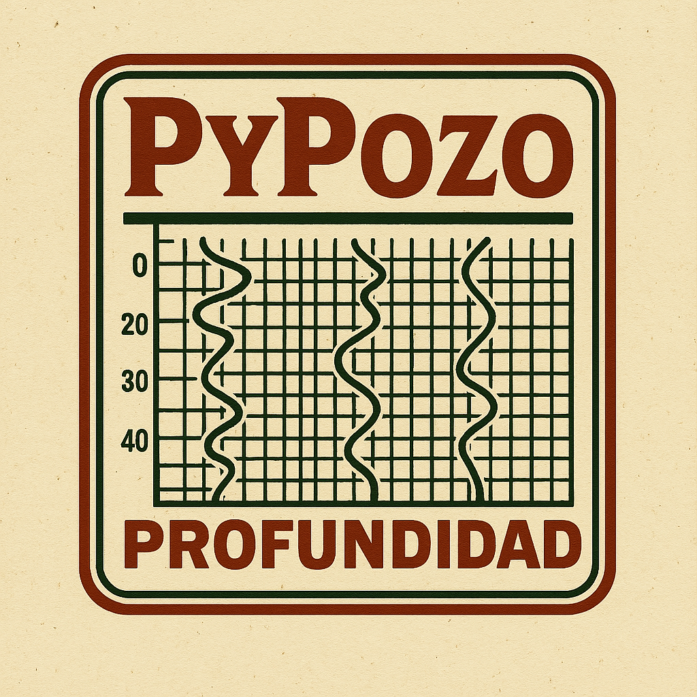

PyPozo 2.0
Aplicación profesional de escritorio para el análisis de pozos petroleros y de agua subterránea. Alternativa open source a WellCAD, con interfaz moderna y herramientas automáticas para el análisis petrofÃsico estándar.
Python
PyQt5
Open Source
CaracterÃsticas PyPozo Básico:
- Carga archivos LAS y visualiza múltiples curvas de registros
- Selección, comparación y fusión de curvas de diferentes pozos
- Cálculos petrofÃsicos estándar: VCL, PHIE, Sw, permeabilidad, análisis litológico
- Exportación de resultados y gráficos en formatos estándar
- Análisis rápido y herramientas automáticas
- Interfaz moderna, personalizable y con paneles
- Registro de actividades y logs
Limitaciones de la versión básica:
- Sin IA ni completado neural de curvas
- Sin análisis avanzado con machine learning
- Funciones premium reservadas para DLC